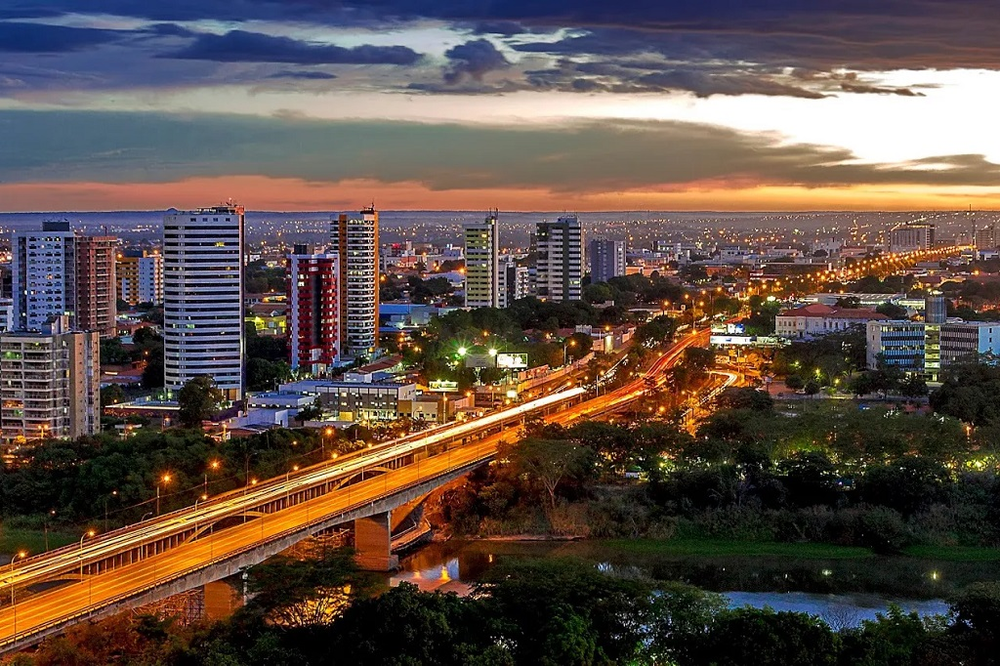

O Piauí é um estado localizado na região Nordeste do Brasil, com uma população de cerca de 3,2 milhões de habitantes. Entre seus principais pontos turísticos estão o Delta do Parnaíba, considerado um dos maiores deltas em mares abertos das Américas, além de praias bonitas e o Parque Nacional de Sete Cidades, famoso por suas formações rochosas impressionantes. O governador atual de Piauí é Ney Bueno de Oliveira Lima.
